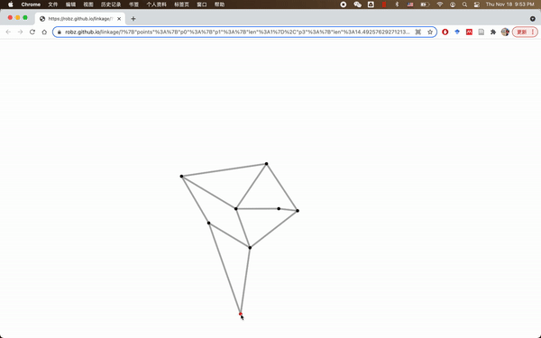
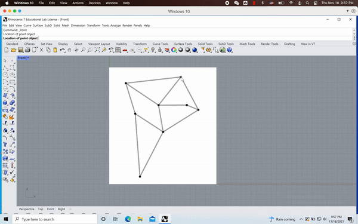
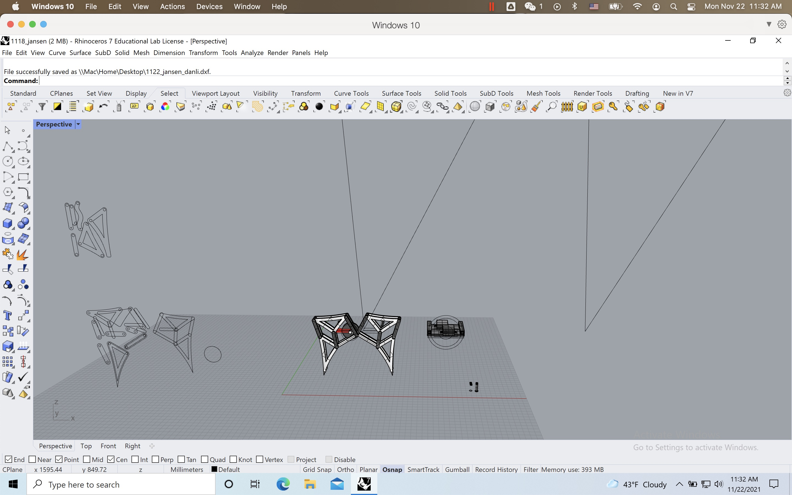
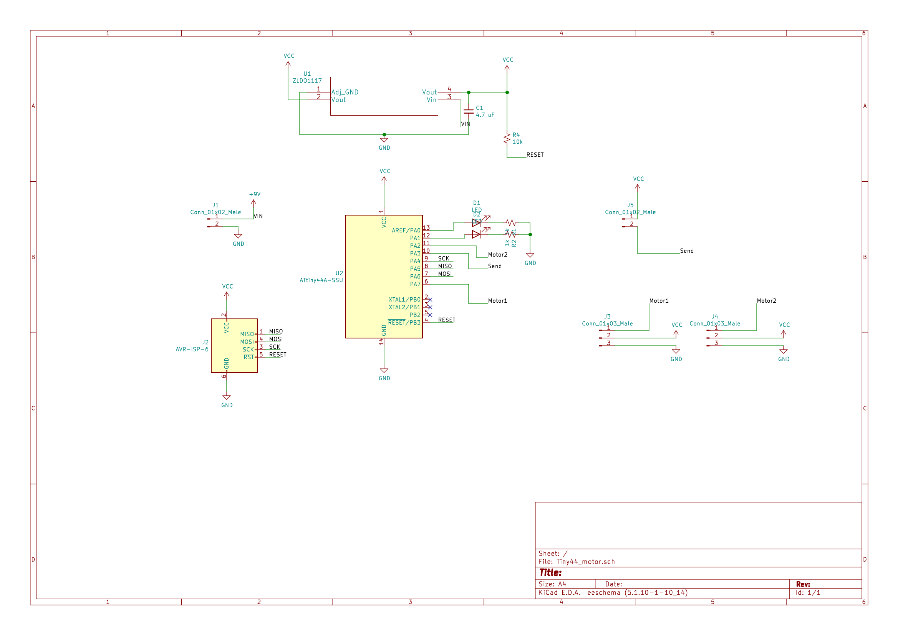
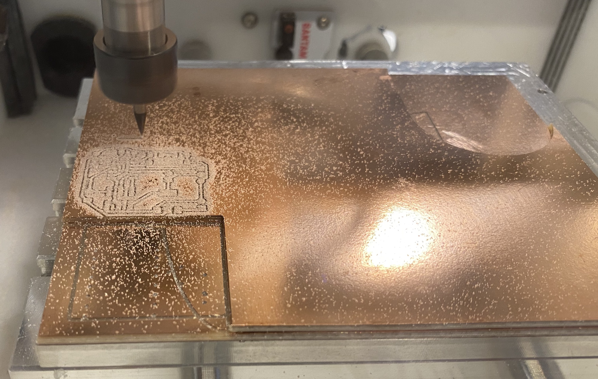
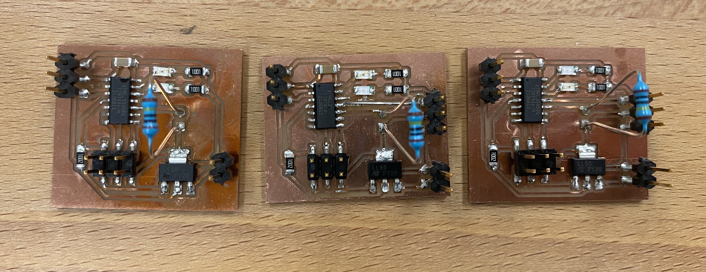
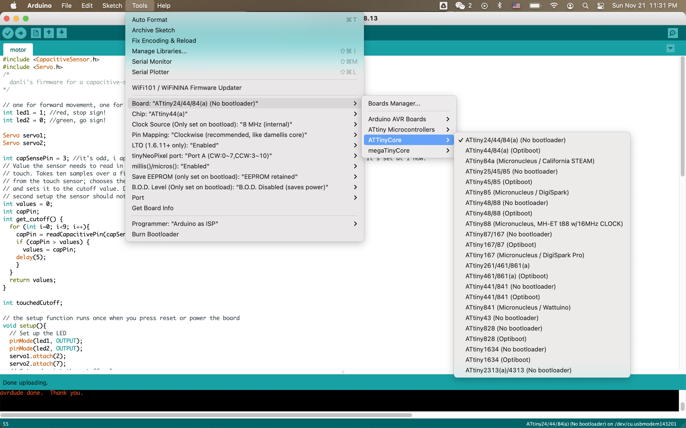
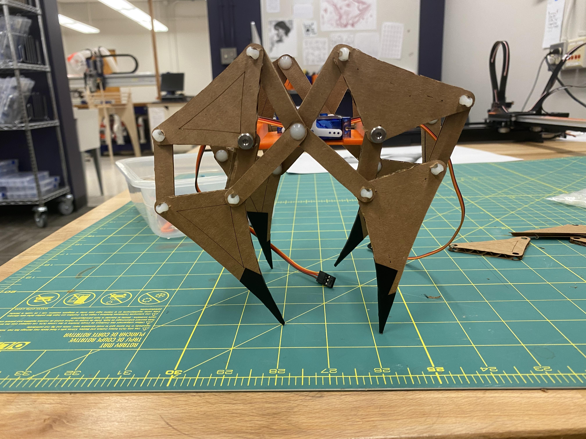
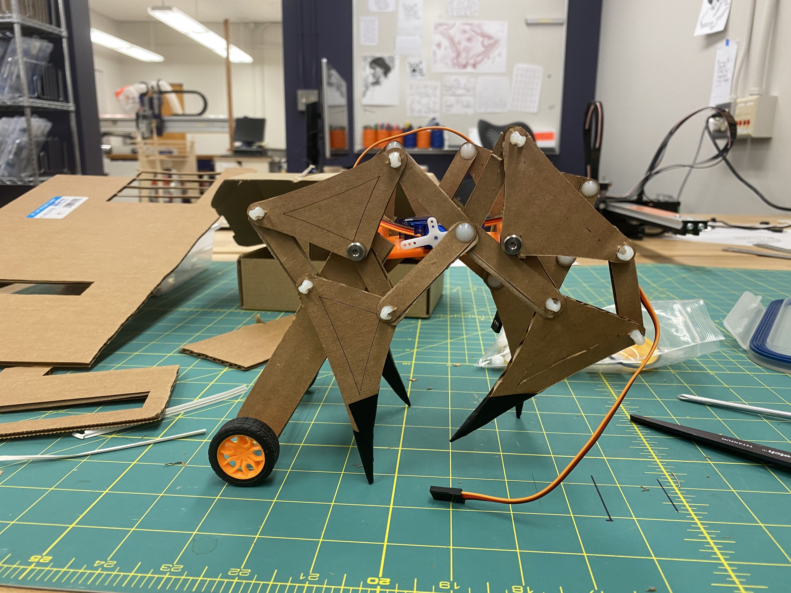
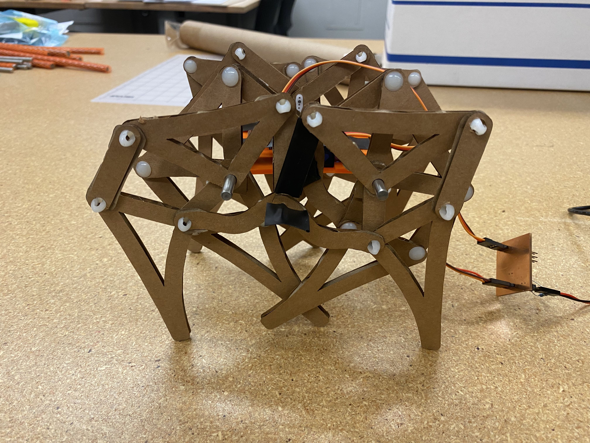

This week we are making machines! Well, not quite there yet, but a motor-driven mechanism that performs motion. Well, to some extent.
Ideation
This week’s reading was a big Peek show and we read and heard about how they build machines. The readings made me think about how parts work together - a motor drives a belt and a belt moves a plate, that kind of collaboration. Within a week, it’s hard for me to come up with a machine on that level of sophistication, so I’ll start small - build something that moves.
I’ve been wanting to make a Jansen walker so I decided to go with that.
The internet is full of different designs but I should be aware that a lot of them was just simulation. A few of them actually made a robot.
Pattern design
I try to get involved in the pattern design process, and I found this repository by robz that helps design N-bar linkage systems with one degree of freedom and any number of rotary inputs. You can play with it in the web-based UI here.

Then I trace it in Rhino to get the pattern for laser-cutting with cardboard.

There are other parts that I modeled in Rhino and 3D printed on a Prusa printer.

Making the board
I spotted a mistake in the capacitive sensing I added to last week’s board and I corrected it.

I milled one test board to test which has only one motor. It worked and I milled two other boards with two motors. It’s always a good idea to have spare!

I toasted the test board and saw the magic smoke. It was a magical moment indeed. I also realize, after looking at Gabrielle’s and Blair’s board, that I should have soldered the pins with the shorter leg sticking out the front of the board and connect to pluggable components from the other side. I ripped my traces by soldering in the way shown below - very sad, otherwise my board would have last forever.

The fixed capacitive touch sensing works better than the previous version now. Very sensitive!

Assembly
I assembled a Jansen linkage system to test. Later I realize this is bigger than what I designed because of mis-translation of units from Rhino to a laser cutter. Imperial units huh? But it’s not way off. I bolted it down to a cardboard box so that I can play with it forever.

My 3D-printed part holds two continuous servo motors. The microcontroller connection setup I used for last assignment actually wouldn’t work because of… outdated microcontroller support? The internet tells me to use ATTinyCore. You can have it by adding this link to your board manager: http://drazzy.com/package_drazzy.com_index.json

I assembled V1 with 4 legs:

And I immediately realized that it’s not good at keeping itself balanced with two diagonal legs touching the ground all the time. An easy way to solve this is… to add training wheels!

That will be my backup. I still have some time at this point so I decided to add more legs to help with balancing like in the video from the top of this post. This 4-legged Jansen walker wears boots because the tippy toes is very fragile, and this is also fixed in the next design.

Demosssss!
Coordinating 4 legs on one side with only one servo motor is not easy. There are collisions between cardboard layers which will jam the rotation. But for a little while it was working - not walking yet, but it’s alive!!!

Files
Laser cutting pattern Firmware PCB design